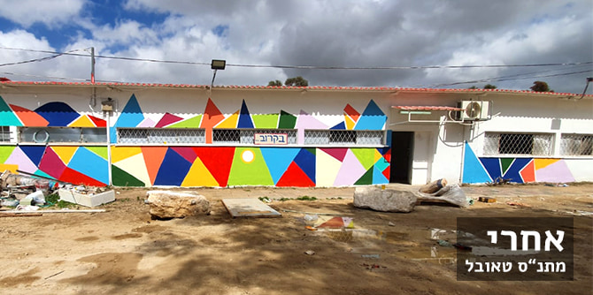
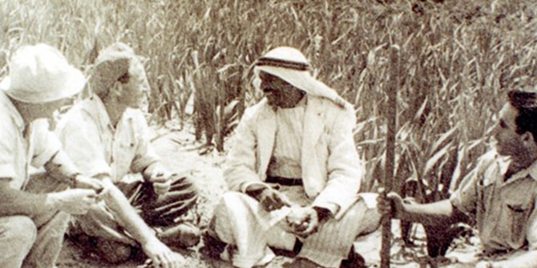
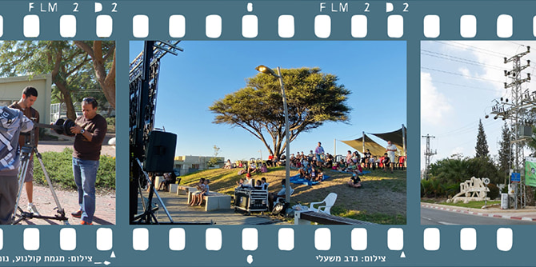

Graduates of Cohort 2 of the Mandel Program for Cultural Leadership in the Negev
Graduates of Cohort 2 of the Mandel Program for Cultural Leadership in the Negev
As part of the practical component of their studies, fellows of the Mandel Program for Cultural Leadership in the Negev gain experience in research and practice in their field by planning and developing an individual project. During this year-long process, the fellows immerse themselves in key issues and challenges facing the Negev. As part of this process, they formulate their vision and translate it into action in the form of innovative initiatives in the cultural arena.
The practical component is an essential part of the program’s theory of change, which sees developing sustainable cultural life that is adapted to Negev society as vital for improving quality of life in the region, which is home to much artistic and cultural activity. The program's theory of change also believes that developing cultural leadership will contribute to the preservation of tradition and identities and will enrich local identity, which in turn will strengthen the uniqueness of the Negev and strengthen ties to the region.
Led by program director Professor Dana Arieli and faculty member Dr. Itzhak (Kiki) Aharonovich, the process of developing personal projects includes individual and group mentoring from a multidisciplinary team of experts, drawn from the fields of visual culture, community, education, art, curation, sociology, and research. The graduates of Cohort 2 have presented their projects on a dedicated Hebrew website, produced under the direction of senior staff member Hadas Kedar, which presents the fruits of their labor under the banner "Dreaming Culture in the Negev."
As can be seen in the examples that follow, the projects all relate to challenges in the places and spaces in which the graduates operate. Creating new cultural initiatives provided fellows with practical experience in designing vision-based and research-driven leadership initiatives aimed at actual implementation in the field and bringing about real-world change.
Yogev Vanounou, one of the founders of the Negev Artists’ House, developed a project that aims to foster artistic creation in the city of Beer Sheva by cultivating local plastic artists and providing art classes. He also seeks to promote municipal policy change in collaboration with the municipal planning department. Under Yogev’s leadership, a range of cultural activities are already taking place under the auspices of the Beer Sheva municipality, as a response to the lack of art and culture during the coronavirus pandemic. Recently, he won a tender for the operation of the municipality’s activities in this realm, which will enable him to start running activities on an ongoing basis starting in June 2021.
The Taubel Community Center in Beer Sheva (Photo: Yogev Vanounou)
Tamar Herzberg, head of pedagogy at the From Holocaust to Revival Museum in Kibbutz Yad Mordechai, developed a project for integrating members of the Arab-Bedouin community into the staff of the museum by training them to serve as guides. The training program is part of a broader vision for promoting meaningful Jewish-Arab dialogue. It is based on the idea that the traumatic memories of the Arab and Jewish populations of the Negev are formative and influential memories that can promote dialogue based on empathy rather than anxiety. Tamar developed the training course in collaboration with A New Dawn in the Negev, a non-profit organization that works to promote Bedouin-Jewish coexistence and is headed by Jamal Alkirnawi, a graduate of the first cohort of the Mandel Program for Cultural Leadership in the Negev. The first group of Arab-Bedouin guides completed their training in February 2021 and began leading tours of the museum in Hebrew and Arabic as part of the museum’s ongoing activities. Preparations are currently underway for the second cohort of the training program.

Image from Tamar Herzberg's project page
Eman Abu Galion, a teacher and social entrepreneur, developed an initiative that aims to use the traditional Bedouin tent as an educational and cultural space through which the younger generation can connect with Bedouin heritage. She envisions the tent as serving students, teachers, and the community as a place of learning about their heritage that will also be a peaceful corner for discussing feelings, having intergenerational and multicultural encounters, and transmitting Bedouin values such as respect, acceptance of others, and hospitality. This, in her vision, will build a connection between past and present in Bedouin society.
 Image from Eman Abu Galion's project page
Image from Eman Abu Galion's project page
Nadav Mishali, founder of the Ofakim Cinematheque, planned an initiative that seeks to establish a new tier of activity at the Cinematheque that would conduct educational, visual, and multicultural activities for children and youth in Ofakim and the entire Western Negev region. Nadav aims to introduce children and youth to cinema as a tool for heightening their ability to express themselves. He will do this by establishing an informal educational framework for activities in a variety of fields related to cinema. These will include workshops for creating films, for critical viewing of films, and more. Nadav’s project is being conducted in collaboration with the Western Negev Cluster, and a film that he is directing with Miriam Ben Gigi, based on a screenplay that they wrote together, will soon be released.
Images from Nadav Mishali's project page
Uvit Kabada, who facilitates parents groups for Fidel, a non-profit organization that aims to integrate Ethiopian Israelis fully into Israeli society, planned an initiative whose aim is to document and preserve the story of the Ethiopian community in Israel and to develop connections between Ethiopian culture and Israeli-Western culture. Uvit seeks to establish a center that will include workshops that will generate encounters with multiple forms of Ethiopian culture: traditional garb, food, crafts and games. She envisions the center not as a memorial to the past but as a living hub that will include a variety of activities intended for diverse types of visitors.
 An image from Uvit Kabada's project page
An image from Uvit Kabada's project page
Aviva Freedman, an architect and social activist, planned a regional art center that will be established in the Sha'ar Hanegev Regional Council. The center will be built on an open plot of land near an immigrant absorption center, centrally located opposite the city of Sderot and Sapir College. Her project aims to make alternative culture available in this rural area, and to expose the varied population groups in this area to various forms of art.
 An image from Aviva Freedman's project page
An image from Aviva Freedman's project page
The graduates of Cohort 2, who have now joined the graduates of Cohort 1, are part of a growing community of leaders in the field of arts and culture in the Negev. The Mandel Center for Leadership in the Negev is currently training the program’s third cohort, and will be training a fourth cohort in 2021-2022.
It is our hope that the initiatives of the fellows and graduates of the Mandel Program for Cultural Leadership in Negev will form the basis for action that will result in positive change and advances in the realm of culture in the Negev. We are confident that the graduates will have the courage and endurance to continue turning dreams into reality, and to lead bold and groundbreaking initiatives for the benefit of society in the Negev – initiatives that will create a society that is stronger and more ethical, and that has greater fortitude.
Click here to visit the “Dreaming Culture in the Negev” website (Hebrew) >>
-
Graduates of Cohort 2 of the Mandel Program for Cultural Leadership in the Negev -
The Taubel Community Center in Beer Sheva (Photo: Yogev Vanounou) -
Image from Tamar Herzberg's project page -
Image from Eman Abu Galion's project page -
Images from Nadav Mishali's project page -
An image from Uvit Kabada's project page -
An image from Aviva Freedman's project page
{kind=link}
{kind=link}
{kind=link}